먼저 생각해 보세요.
Weißt du, wann wir fahren? 이 문장에서 동사 fahren은 어디에 있나요?
다른 문장 안에 들어간 질문에서는 동사가 맨 끝으로 가요.
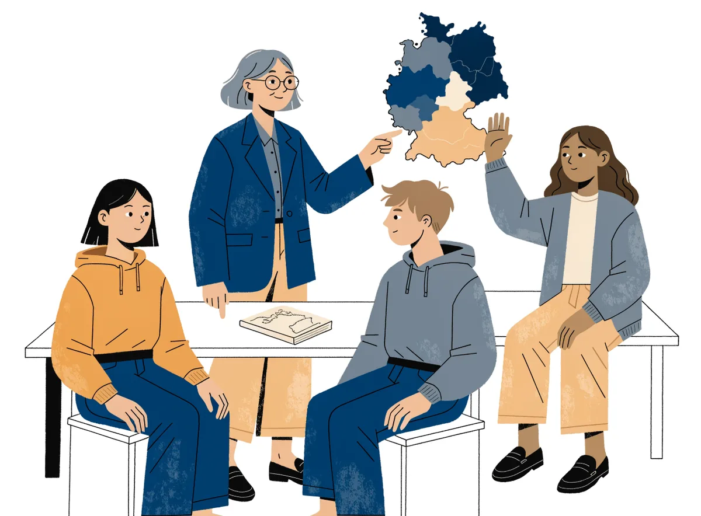
6월 중순이에요. 8b는 두 주 뒤에 베를린으로 수학여행(Klassenfahrt)을 가요. 오늘은 베를린에서 무엇을 할지 정하고, 숙소에 전화해서 궁금한 것을 물어요.
눌러서 들어 보세요.
먼저 생각해 보세요.
Weißt du, wann wir fahren? 이 문장에서 동사 fahren은 어디에 있나요?
다른 문장 안에 들어간 질문에서는 동사가 맨 끝으로 가요.
Lektion 1의 낱말 다섯 개를 다시 떠올려 보세요.
문법 indirekte Fragen (Weißt du, wann …? ob …?), Wir könnten …, an die Ostsee, in die Berge
이 과를 마치면 여행 계획을 세우고, 숙소에 문의하고, 제안하고 정할 수 있어요.
수업 시간이에요. Frau Schneider와 8b가 수학여행 일정을 짜요.
들으면서 찾아보세요. 유스호스텔에는 누가 전화하나요?
오후에 Lukas와 Yuna가 베를린의 유스호스텔에 전화해요.
들으면서 찾아보세요. 아침 식사는 몇 시부터 몇 시까지인가요?
두 대화를 듣고 답하세요.
8b의 기차는 언제 출발하나요?
Die 8a fährt in die Berge.
Die 8a fährt an die Ostsee und die 8c in die Berge.
Was möchte Elif wissen?
Was schlägt Emma vor?
In der Jugendherberge gibt es kein WLAN.
Ja, im ganzen Haus. Es ist kostenlos.
Wann gibt es Frühstück?
역에서 유스호스텔까지는 무엇을 타고 가나요?
낱말 30개예요. 낱말이나 예문 앞의 단추를 누르면 소리가 나요. 명사는 der, die, das를 색으로 구분했어요.
die Klassenfahrt, die Klassenfahrten 수학여행
Die Klassenfahrt dauert fünf Tage.수학여행은 닷새 동안 해요.
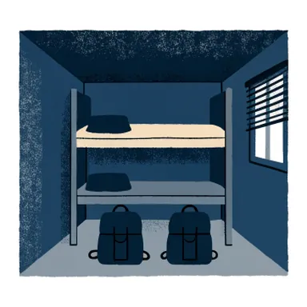
die Jugendherberge, die Jugendherbergen 유스호스텔
Wir schlafen in einer Jugendherberge.우리는 유스호스텔에서 자요.
die Hauptstadt, die Hauptstädte 수도
Berlin ist die Hauptstadt von Deutschland.베를린은 독일의 수도예요.
das Programm, die Programme 일정, 프로그램
Das Programm ist fertig.일정이 다 짜였어요.
planen, hat geplant 계획하다
Wir planen eine Reise.우리는 여행을 계획해요.
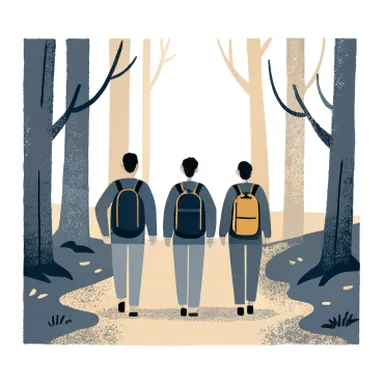
der Ausflug, die Ausflüge 소풍, 나들이
Am Samstag machen wir einen Ausflug.토요일에 우리는 소풍을 가요.
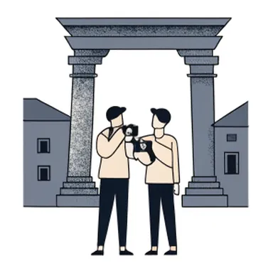
die Sehenswürdigkeit, die Sehenswürdigkeiten 명소, 볼거리
Berlin hat viele Sehenswürdigkeiten.베를린에는 볼거리가 많아요.
besichtigen, hat besichtigt 구경하다, 관람하다
Wir besichtigen den Dom.우리는 대성당을 구경해요.
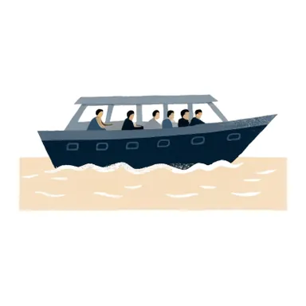
das Schiff, die Schiffe 배
Das Schiff fährt um zehn Uhr.배는 10시에 떠나요.
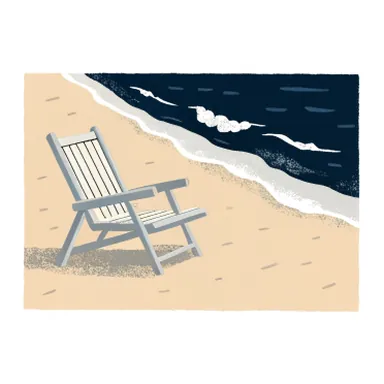
die Ostsee 발트해
Die 8a fährt an die Ostsee.8a는 발트해로 가요.
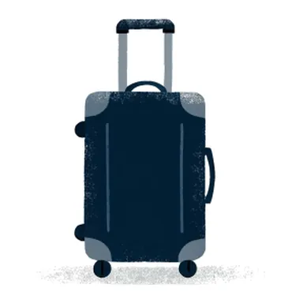
der Koffer, die Koffer 여행 가방
Mein Koffer ist zu schwer.내 여행 가방은 너무 무거워요.
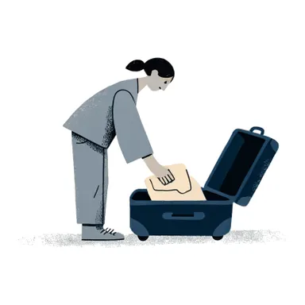
packen, hat gepackt (짐을) 싸다
Ich packe heute meinen Koffer.나는 오늘 가방을 싸요.
mitnehmen (du nimmst mit, er nimmt mit) 가져가다, 데려가다
Nimm eine Jacke mit!재킷을 가져가!
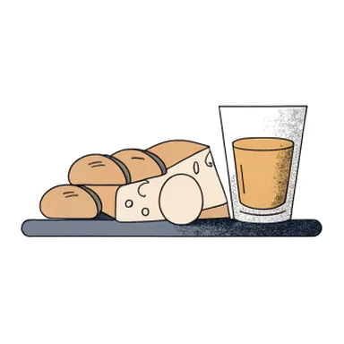
das Frühstück 아침 식사
Das Frühstück ist um sieben.아침 식사는 7시예요.
die Übernachtung, die Übernachtungen 숙박
Eine Übernachtung kostet 30 Euro.하룻밤 묵는 데 30유로예요.
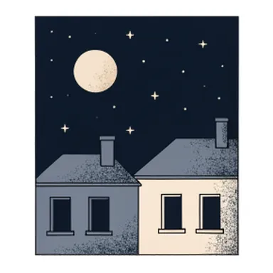
die Nacht, die Nächte 밤
Wir bleiben vier Nächte.우리는 나흘 밤을 묵어요.
das WLAN 와이파이
Gibt es hier WLAN?여기 와이파이가 있어요?
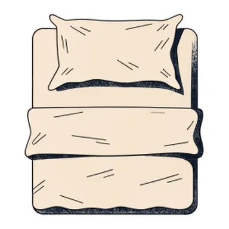
die Bettwäsche 침구
Die Bettwäsche bekommt ihr von uns.침구는 우리가 줘요.
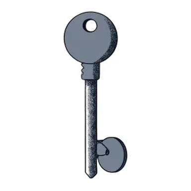
der Schlüssel, die Schlüssel 열쇠
Wo ist der Schlüssel?열쇠가 어디 있어요?
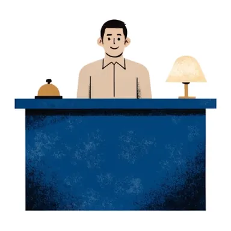
die Rezeption 접수처, 프런트
Fragen Sie bitte an der Rezeption.프런트에 물어보세요.
die Information, die Informationen 정보
Vielen Dank für die Informationen.알려 주셔서 감사합니다.
reservieren, hat reserviert 예약하다
Ich möchte ein Zimmer reservieren.방을 하나 예약하고 싶어요.
wissen (du weißt, er weiß) 알다
Ich weiß es nicht.나는 모르겠어요.
ob ~인지 (아닌지)
Ich weiß nicht, ob er kommt.그가 올지 모르겠어요.
der Vorschlag, die Vorschläge 제안
Ich habe einen Vorschlag.제안이 하나 있어요.
vorschlagen (du schlägst vor, er schlägt vor) 제안하다
Was schlägst du vor?너는 뭘 제안해?
dafür 찬성하는
Ich bin dafür.나는 찬성이에요.
dagegen 반대하는
Ich bin dagegen.나는 반대예요.
einverstanden 동의하는
Bist du einverstanden?너도 좋아?
entscheiden, hat entschieden 정하다, 결정하다
Wir entscheiden morgen.우리는 내일 정해요.
이 과의 낱말로 여덟 문제를 풀어요.
wissen은 ich와 er, sie, es의 모양이 같고 끝에 -t가 붙지 않아요. 줄을 누르면 소리가 나요.
예문을 보고 답해 보세요.
Wann fährt der Zug ab?를 Wissen Sie, … 뒤에 넣으면 동사는 어떻게 되나요?
규칙
질문을 Weißt du, …?, Ich möchte wissen, …, Können Sie mir sagen, …? 뒤에 넣으면 더 공손하게 물을 수 있어요. 의문사(wann, wo, was, wie)는 그대로 두고, 동사를 맨 끝으로 보내요. 분리 동사는 다시 붙여 써요.
| 바로 묻기 | 문장 안에 넣어 묻기 |
|---|---|
| Wann fährt der Zug ab? | Wissen Sie, wann der Zug abfährt? |
| Wo ist die Jugendherberge? | Weißt du, wo die Jugendherberge ist? |
| Was kostet das? | Ich möchte wissen, was das kostet. |
| Wie viele Betten hat ein Zimmer? | Können Sie mir sagen, wie viele Betten ein Zimmer hat? |
주의 앞부분과 질문 사이에는 쉼표를 찍어요. weil, dass, wenn 문장처럼 동사가 맨 끝이에요.
예문을 보고 답해 보세요.
Gibt es WLAN?처럼 ja나 nein으로 답하는 질문을 문장 안에 넣을 때 쓰는 말은 무엇인가요?
규칙
의문사가 없고 ja나 nein으로 답하는 질문은 ob으로 이어요. ob은 '~인지 (아닌지)'라는 뜻이에요. 이때도 동사는 맨 끝으로 가요.
| 바로 묻기 | 문장 안에 넣어 묻기 |
|---|---|
| Gibt es WLAN? | Ich möchte wissen, ob es WLAN gibt. |
| Haben wir am Abend frei? | Weißt du, ob wir am Abend frei haben? |
| Kommt Lukas pünktlich? | Ich weiß nicht, ob Lukas pünktlich kommt. |
주의 dass는 아는 사실을 말할 때, ob은 아직 모르는 것을 물을 때 써요. Ich weiß, dass er kommt. Ich weiß nicht, ob er kommt.
예문을 보고 답해 보세요.
Wir könnten …으로 무엇을 하나요?
규칙
könnten으로 '~할 수도 있어', '~하면 어때?' 하고 부드럽게 제안해요. 다른 동사는 원형으로 맨 끝에 와요. 좋으면 Gute Idee!나 Ich bin dafür., 싫으면 Ich bin dagegen.이라고 답해요.
| 주어 | könnten | 예문 |
|---|---|---|
| ich | könnte | Ich könnte dir helfen. |
| du | könntest | Du könntest Elif fragen. |
| wir | könnten | Wir könnten ins Museum gehen. |
| ihr | könntet | Ihr könntet mit dem Schiff fahren. |
주의 Könnten Sie …?는 공손한 부탁이고, Wir könnten …은 제안이에요. 모양은 같고 쓰임이 달라요.
예문을 보고 답해 보세요.
바다나 호수처럼 물가로 갈 때 쓰는 전치사는 무엇인가요?
규칙
어디로 가는지 말할 때 물가는 an, 산이나 도시 안은 in과 4격을 써요. 관사 없이 쓰는 도시와 나라 이름 앞에는 nach를 써요.
| 어디로? | 전치사 | 예 |
|---|---|---|
| 물가 | an + 4격 | an die Ostsee, ans Meer, an den See |
| 산, 도시, 관사가 있는 나라 | in + 4격 | in die Berge, in die Stadt, in die Schweiz |
| 도시, 관사 없는 나라 | nach | nach Berlin, nach Österreich |
주의 an das는 ans, in das는 ins로 줄여요. Wir fahren ans Meer. Wir gehen ins Museum.
Frau Schneider가 수학여행 일정을 알려 줘요. 듣고 답하세요.
Informationen zur Klassenfahrt
Frau Schneider Wir fahren am Montag um acht Uhr mit dem Zug nach Berlin. Die Fahrt dauert ungefähr fünf Stunden.
Frau Schneider Am Dienstag besichtigen wir das Brandenburger Tor und den Reichstag.
Frau Schneider Am Mittwoch machen wir eine Fahrt mit dem Schiff. Am Nachmittag habt ihr frei.
Frau Schneider Am Donnerstag gehen wir ins Museum. Am Freitag fahren wir zurück.
Frau Schneider Bitte nehmt eine Regenjacke mit. Und packt nicht zu viel in den Koffer!
Wie lange dauert die Fahrt nach Berlin?
Was macht die Klasse am Dienstag?
Am Mittwochnachmittag haben die Schüler frei.
학생들은 무엇을 가져가야 하나요?
Wann fährt die Klasse zurück?
듣고 알맞은 것을 고르세요.
Elif는 무엇을 찾고 있나요?
Weißt du, wo mein Koffer ist?
Lukas는 무엇이 궁금한가요?
Ich möchte wissen, ob wir am Abend frei haben.
Emma는 무엇을 하고 있나요?
Wir könnten am Mittwoch ins Kino gehen.
Yuna는 어떻게 생각하나요?
Ich bin dagegen. Das Museum ist zu teuer.
8b의 수학여행 일정표예요. 보고 답하세요.
Klassenfahrt der 8b nach Berlin
| Tag | Vormittag | Nachmittag |
|---|---|---|
| Montag | Fahrt nach Berlin | Zimmer, Spaziergang |
| Dienstag | Brandenburger Tor | Reichstag |
| Mittwoch | Fahrt mit dem Schiff | frei |
| Donnerstag | Museum | East Side Gallery |
| Freitag | Koffer packen | Fahrt nach Köln |
Wann besichtigt die Klasse den Reichstag?
Was macht die Klasse am Donnerstagnachmittag?
Am Mittwochnachmittag gibt es kein Programm.
학생들은 언제 짐을 싸나요?
유스호스텔에 붙어 있는 안내문이에요. Nachtruhe는 '밤에 조용히 하는 시간'이에요. 읽고 답하세요.
Willkommen in der Jugendherberge!
Frühstück gibt es von 7 bis 9 Uhr. Abendessen gibt es um 18 Uhr.
Um 22 Uhr ist Nachtruhe. Bitte seid dann leise.
Das WLAN ist kostenlos. Das Passwort bekommt ihr an der Rezeption.
Gebt den Schlüssel bitte an der Rezeption zurück, wenn ihr in die Stadt geht.
Am letzten Tag müssen die Zimmer bis 10 Uhr frei sein.
Wann gibt es Abendessen?
Für das WLAN muss man bezahlen.
Das WLAN ist kostenlos.
Was macht man mit dem Schlüssel, wenn man in die Stadt geht?
밤 10시부터는 어떻게 해야 하나요?
질문을 문장 안에 넣었어요. 알맞은 동사 모양을 고르세요.
Weißt du, wann der Zug ?
동사가 맨 끝으로 가고, 분리 동사는 다시 붙어요.
Ich möchte wissen, wo die Jugendherberge .
Können Sie mir sagen, wie viel das ?
Weißt du, was wir am Dienstag ?
Ich weiß nicht, wann wir .
한국어 뜻을 보고 ob이나 알맞은 의문사를 고르세요.
Ich möchte wissen, es WLAN gibt.
와이파이가 있는지 알고 싶어요.
Weißt du, wir fahren?
우리가 언제 가는지 알아?
Können Sie mir sagen, der Bahnhof ist?
역이 어디인지 알려 주실 수 있어요?
Ich weiß nicht, Lukas pünktlich kommt.
Lukas가 제시간에 올지 모르겠어요.
Frag bitte, die Fahrt kostet.
가는 데 얼마인지 물어봐 줘.
Weißt du, wir Bettwäsche brauchen?
침구가 필요한지 알아?
제안하는 말과 어디로 가는지 나타내는 말이에요. 한국어 뜻을 보고 고르세요.
Wir eine Fahrt mit dem Schiff machen.
우리 배를 타 볼 수도 있어.
Die 8a fährt die Ostsee.
8a는 발트해로 가요.
Die 8c fährt die Berge.
8c는 산으로 가요.
Wir fahren Berlin.
우리는 베를린으로 가요.
Im Sommer fahre ich Meer.
여름에 나는 바다에 가요.
Du Frau Schneider fragen.
Schneider 선생님께 여쭤볼 수도 있잖아.
낱말을 순서대로 눌러 문장을 만드세요.
우리가 언제 가는지 알아?
와이파이가 있는지 알고 싶어요.
역이 어디인지 알려 주실 수 있어요?
우리 박물관에 갈 수도 있어.
낱말과 뜻을 짝지으세요.
듣고 그대로 써 보세요.
Weißt du, wann wir fahren? 우리가 언제 가는지 알아?
Wir könnten ins Museum gehen. 우리 박물관에 갈 수도 있어.
Ich möchte wissen, ob es WLAN gibt. 와이파이가 있는지 알고 싶어요.
Wir könnten ins Museum gehen. 우리 박물관에 갈 수도 있어.
Ich habe einen Vorschlag. 제안이 하나 있어.
Was meinst du? 네 생각은 어때?
Gute Idee! 좋은 생각이야!
Ich bin dafür. 나는 찬성이야.
Ich bin dagegen. 나는 반대야.
Einverstanden! 좋아, 그렇게 하자!
Können Sie mir sagen, wann …? ~이 언제인지 알려 주실 수 있어요?
Ich möchte wissen, ob … ~인지 알고 싶어요.
Wissen Sie, wo …? ~이 어디인지 아세요?
Guten Tag, hier ist … 안녕하세요, 저는 ~입니다.
Noch eine Frage: … 하나만 더 여쭤볼게요.
Vielen Dank für die Informationen. 알려 주셔서 감사합니다.
Auf Wiederhören! (전화에서) 안녕히 계세요!
대화 B에서 역할을 하나 고르세요. 상대의 말은 음성으로 나오고, 내 차례에는 직접 말해요.
친구들과 가고 싶은 나들이를 제안해 보세요. 완성된 문장을 소리 내어 읽어 보세요.
Wir könnten ans Meer fahren.
Dort könnten wir im Meer schwimmen.
Ich möchte wissen, was die Fahrt kostet.
Eine Anfrage
가족 여행 때 묵을 유스호스텔에 문의하는 메일을 써 보세요.
Guten Tag, wir möchten im August drei Nächte in Ihrer Jugendherberge schlafen. Wir sind vier Personen. Können Sie mir sagen, ob Sie ein Zimmer mit vier Betten haben? Ich möchte auch wissen, wann es Frühstück gibt. Und wissen Sie, wie wir vom Bahnhof zu Ihnen kommen? Vielen Dank für Ihre Antwort. Viele Grüße, Jisu Kim
다 쓴 뒤에 확인해 보세요.
Ich kann eine Reise planen und Vorschläge machen.여행 계획을 세우고 제안할 수 있어요.
Ich kann höflich nach Informationen fragen.필요한 것을 공손하게 물을 수 있어요.
Ich kann sagen, ob ich dafür oder dagegen bin.찬성인지 반대인지 말할 수 있어요.